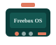

1

Freebox OS → DHCP
Paramètres de la Freebox → DHCP → DNS personnalisés.
| Priorité | Valeur |
|---|---|
| DNS1 | 9.9.9.10 (Quad9 Unsecured) |
| DNS2 | HOST_IP (VM freebox-dns) |
Configurer le LAN, les clients chiffrés (DoH/DoT), valider avec dig et consulter l'UI Blocky.
bash scripts/health-check.sh OKHOST_IP connu (ex. IP VM typique 192.168.1.x — la vôtre peut différer)scripts/generate-certs.sh)
Paramètres de la Freebox → DHCP → DNS personnalisés.
| Priorité | Valeur |
|---|---|
| DNS1 | 9.9.9.10 (Quad9 Unsecured) |
| DNS2 | HOST_IP (VM freebox-dns) |

| Transport | Libre | Secure | Client typique |
|---|---|---|---|
| Plain DNS | :5356 lab / :53 prod | :5354 | DHCP, IoT |
| DoH | :8453/dns-query | :8444/dns-query | Firefox, Chrome, iOS |
| DoT | :8853 lab / :853 prod | :8854 | Android apps |
| DoQ | :8853/udp | — | dnsproxy clients |
# dns-libre (uncensored)
https://HOST_IP:8453/dns-query
# dns-secure (filtrage Blocky)
https://HOST_IP:8444/dns-queryGénérer les profils clients :
python3 scripts/generate-client-profiles.pyFichiers dans config/clients/generated/ : Firefox policies, Apple mobileconfig, Android Private DNS, Windows PowerShell.
apple-doh-libre.mobileconfig ou apple-doh-secure.mobileconfigconfig/clients/generated/windows-doh.ps1 généré
# Plain DNS (lab)
dig @HOST_IP -p 5356 example.com +short # dns-libre
dig @HOST_IP -p 5354 example.com +short # dns-secure
dig @HOST_IP -p 5354 doubleclick.net +short # doit être bloqué/NXDOMAIN
# DoH
curl -sk "https://HOST_IP:8453/dns-query?name=example.com&type=A"
curl -sk "https://HOST_IP:8444/dns-query?name=example.com&type=A"
# Health global
bash scripts/health-check.shOuvrir dans un navigateur LAN :
http://HOST_IP:3080Statistiques de requêtes, listes actives, blocages récents — équivalent local Pi-hole / uBlock via Blocky.
flowchart LR
q[Requête client]
libre[dns-libre uncensored]
secure[dns-secure threat-local]
up1[UncensoredDNS DG Quad9]
up2[Blocky + listes Pi-hole uBlock]
q -->|port 53 / 8453| libre
q -->|port 5354 / 8444| secure
libre --> up1
secure --> up2
Équivalents Markdown : freebox.md · encrypted-dns.md · dns-pins.md